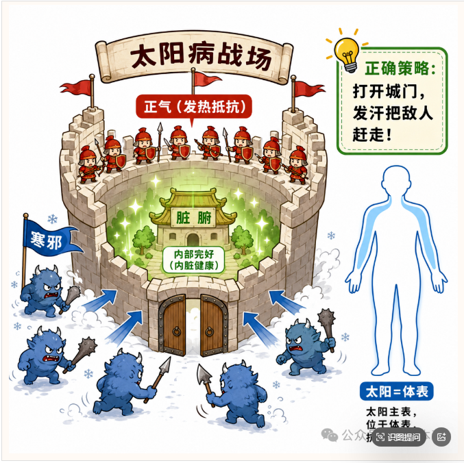
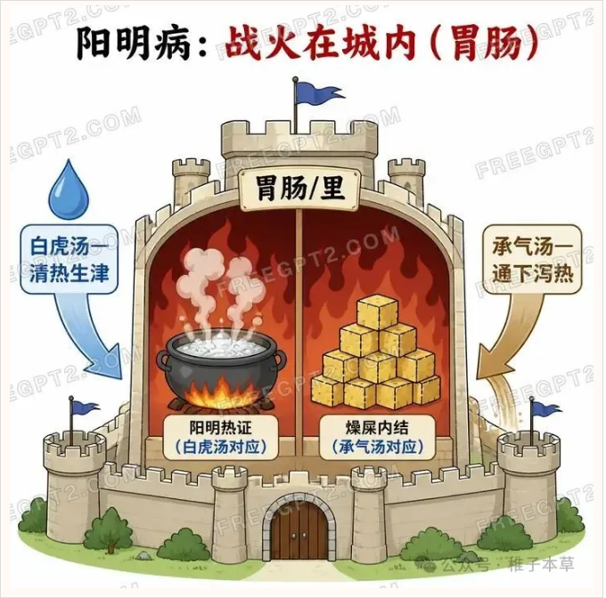
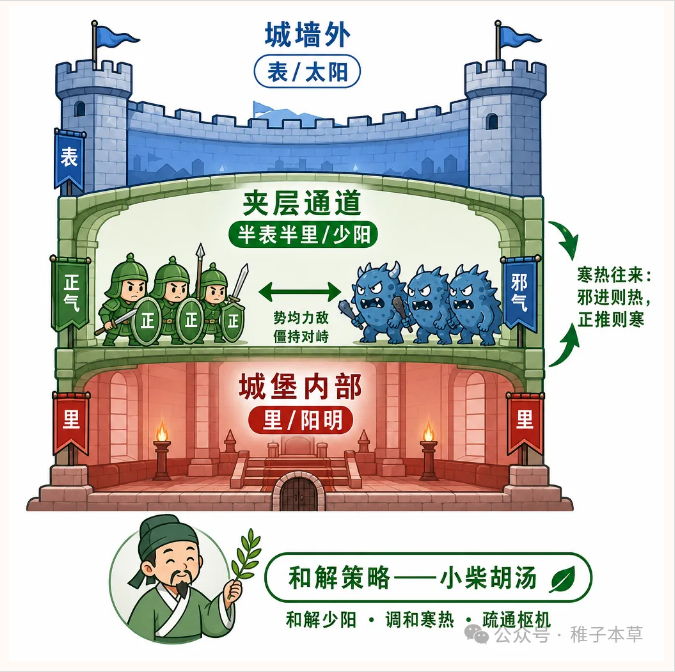
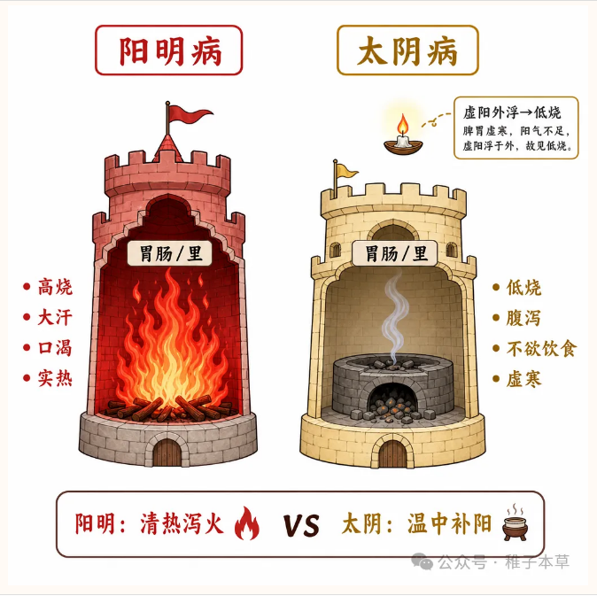
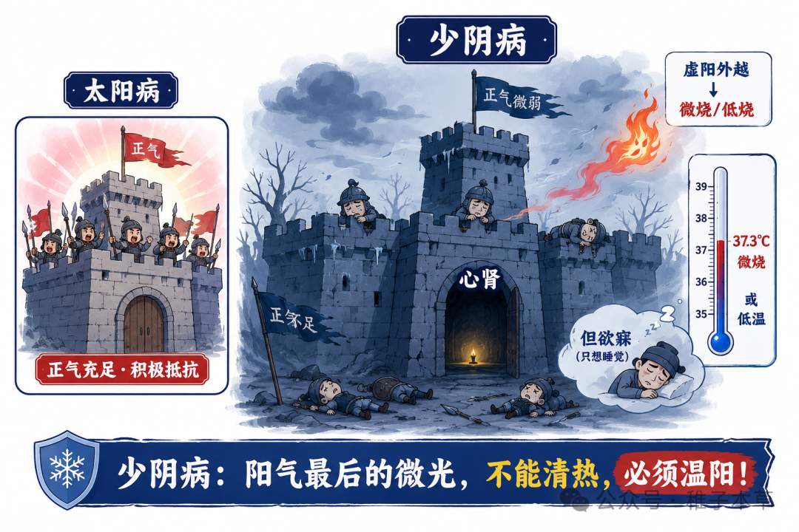
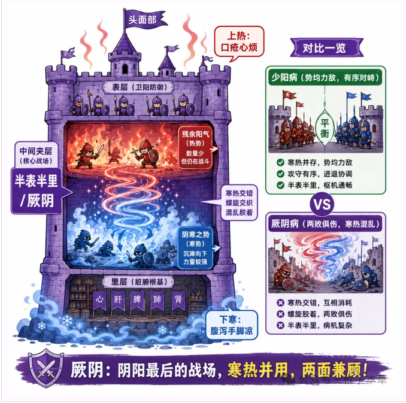

1. 六张模型图：按书序看六经
可以把孩子的身体想成一座城堡。病邪来了，可能在城外，可能卡在城门，也可能已经进入城内；孩子的正气有时很有力，有时已经虚弱。六经就是把“病邪在哪里”和“身体反应强不强”合在一起看。
下面 6 张图按《六经辨证临床之路》的常用讲解顺序排列：太阳、阳明、少阳、太阴、少阴、厥阴。家长不用背概念，只要记住每张图在提醒你看什么。

太阳像城堡外墙被风寒攻击。孩子常见怕冷怕风、流清鼻涕、头痛身痛、咳嗽初起。重点是“表证还在”，方向是先把外面的邪气从表解出去。

阳明像城内火热太盛。孩子常见高热、口干口渴、大便干、口气重、舌苔黄厚腻、黄痰、积食化热。重点是“里实热”，方向是清热、化痰热、通腑消积。

少阳像病邪卡在城门口，进也不是、退也不是。孩子可能一阵冷一阵热、口苦咽干、胸胁不舒服、恶心烦躁。重点不是猛发汗或猛清热，而是“和解”。

太阴像城内粮草和炉火不足，脾胃运化弱。孩子常见食欲差、肚子胀、大便稀、畏寒肢冷、白痰多。重点是“里虚寒或寒湿”，不能一味清热。

少阴也在表，但孩子已经明显没力气。可能鼻塞流涕、怕冷，却精神差、想睡、手脚凉、声音低。小儿出现这种线索，不适合自行选药，应让医生判断。

厥阴像城里一边着火、一边结冰。上面可能咽痛、口腔溃疡、烦热，下面又腹泻、怕冷、手脚凉。它最复杂，不能单清热或单温里，应交给医生辨证。
2. 六经其实是“位置 + 状态”
这 6 张图可以归纳成一个简单规则：先看位置，再看正气强弱。表、半表半里、里是位置；阳证、阴证是身体反应状态。
3. 六经各经怎么处理，哪些不能乱来
下面只讲治疗方向和禁忌，不列具体方药。真正用药还要看年龄、体质、病程、兼夹证和药品说明书。
太阳病：先打开城门外的通路
常见表现：怕冷怕风、流清涕、头痛身痛、咳嗽初起。
处理原则：辛温解表，帮助身体把表邪从外面散出去。
禁忌：表证明显时，不宜一上来只用苦寒清热药；大汗、明显乏力、口干津伤时，也不宜继续单纯发汗。
阳明病：城内热盛，要清热或通腑
常见表现：高热、口干口渴、大便干、口气重、舌苔黄厚腻、黄痰、积食化热。
处理原则：清里热、化痰热；若有明显食积、便干、腹满，要考虑通腑消积的方向。
禁忌：要警惕“真热假寒”，不要把里热导致的怕冷误当普通风寒；如果是虚弱导致的假性便秘，不可盲目攻下。
少阳病：敌人卡在城门，要和解
常见表现：一会冷一会热、口苦、咽干、胸胁不舒服、烦躁、恶心想吐。
处理原则：和解少阳，调和枢机，让卡住的“城门”重新转起来。
禁忌：少阳不适合单纯发汗、催吐或攻下。若寒饮、水饮明显，也不能只按实热清解。
太阴病：城内虚寒，要护住脾胃
常见表现：大便稀、腹胀、食欲差、畏寒肢冷、舌苔白厚腻、白痰多。
处理原则：温中散寒、健脾益气、化痰湿。
禁忌：不宜乱用清热解毒、苦寒或攻下药，否则可能伤脾阳，让腹泻和食欲差更重。
少阴病：外面有邪，但孩子没力气
常见表现：精神差、想睡、手脚凉、低热或不高热、鼻塞流涕但体质虚弱。
处理原则：助阳发表、温阳通络，需要医生判断。
禁忌：不能像太阳病那样单纯强力发汗，否则可能更伤阳气。小儿出现少阴线索，不建议自行选药。
厥阴病：上热下寒，最容易看错
常见表现：上面口腔溃疡、咽痛、烦热，下面腹泻、怕冷、手脚凉，寒热错杂。
处理原则：清上温下，寒热并治，需要医生综合辨证。
禁忌：不能只清热，也不能只温里。小儿出现厥阴线索，应交给医生处理。
4. 合病：小儿发热咳嗽常常不是单一路线
临床上常见“两层或三层同时出问题”。例如既怕冷流涕，又咽痛口干；既口苦恶心，又大便干；既有黄痰，又食欲差。此时不能只抓一个症状，要分清主次。
5. 小儿发热：这些情况不要等网页结果
网页工具只能做学习和沟通参考，不能代替医生判断。孩子发热咳嗽变化快，以下情况建议及时就医：
6. 这个网页怎么用更安全
先看危险信号，再做问诊。问诊结果会显示“主证”和“涉及证候”，药物参考只从当前中成药数据库中匹配，不额外推荐数据库外药物。
中成药多来自古代经方或老中医有效经验方，临床上有实践基础；但具体到每个孩子，体质、病程、兼夹证和禁忌都不同，所以最终仍应在医生或执业药师指导下使用。若需要更精准处理，应由医生开具个性化中药方。